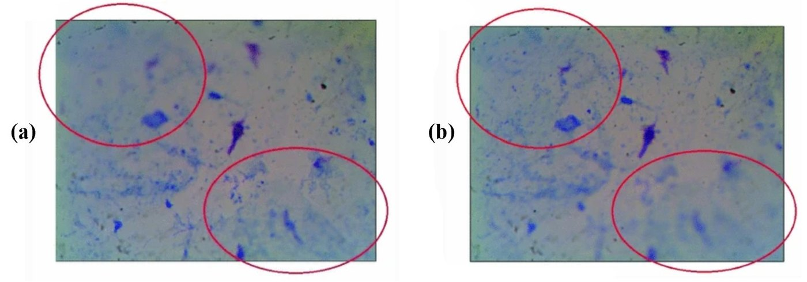
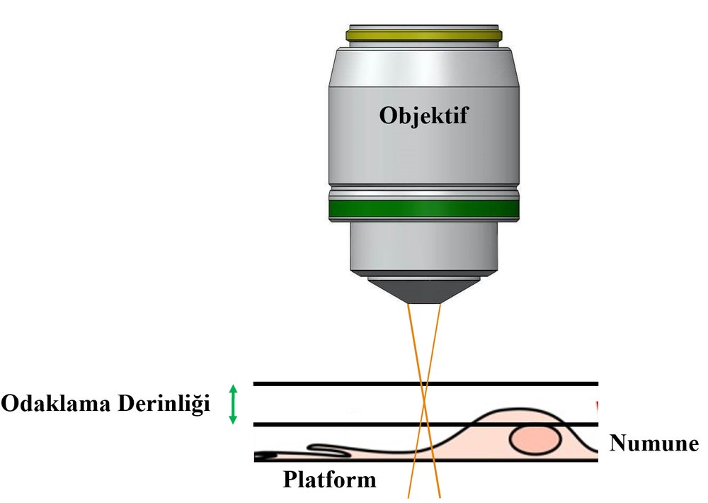
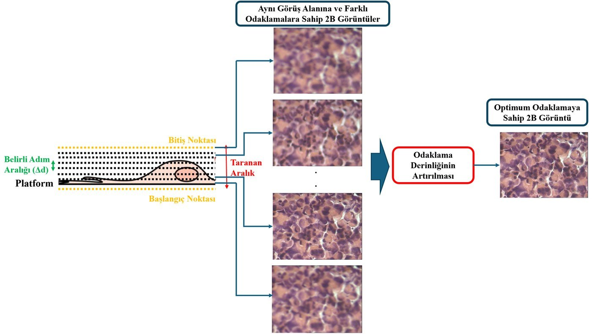
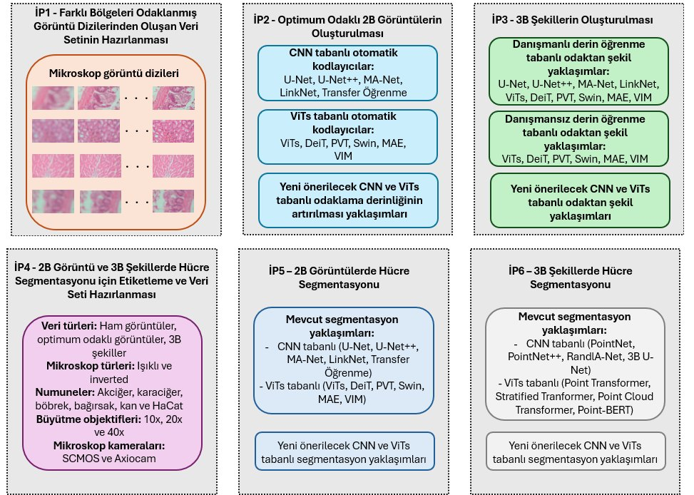

Başarılı Bir Proje Dosyası Nasıl Kurgulanır?
Dr. Öğr. Üyesi Ramazan Özgür DOĞAN · Doç. Dr. Hülya DOĞAN · Prof. Dr. Feride Sena SEZEN

Bu etkinlik TÜBİTAK BİDEB 2237-A Bilimsel Eğitim Etkinlikleri Desteği Programı kapsamında desteklenmektedir.
Panel dosyanızı dört başlıkta puanlar
Özgün Değer
Konu neden önemli, literatürde ne eksik, sorunuz ve hipoteziniz ne?
Yöntem
Yöntem, hipotezi sınamaya yetecek kadar belirgin ve doğru mu?
Proje Yönetimi
Takvim gerçekçi mi, başarı ölçülebilir mi, B planı var mı?
Yaygın Etki
Kim, ne zaman, hangi ölçülebilir katkıyı görecek?
Kaynak: TÜBİTAK, 1001 Araştırma Projelerinin Yazımında Dikkat Edilecek Hususlar (2026)
Bir 3501 başvurusunu bölüm bölüm okuyacağız
Yürütücü: Dr. Öğr. Üyesi Hülya DOĞAN · KTÜ Yazılım Mühendisliği · 2025
- Tez bilgileri · 3501’e özgü
- Özet ve anahtar kelimeler (Türkçe ve İngilizce)
- Kariyer Geliştirme Potansiyeli · 3501’e özgü
- Özgün Değer · Yöntem · Proje Yönetimi · Yaygın Etki
- Ekler: kaynaklar, bütçe, ekibin diğer projeleri
Yürütücü bu alanlarda ilk çalışmalarına lisans öğrencileri ile 2022 – 1. (…) ve 2. (…) dönemlerinde kabul edilen TUBİTAK 2209-A, 2219 doktora sonrası araştırma bursu projeleri ile başlamıştır.
Problemden çıktıya tek bir iplik
Problem
Soru
Hipotez
Amaç
Ölçüt
Çıktı
Özet, dosyanın tamamını bir sayfada anlatır
ÖRNEK DOSYADA · ÖZETİN AKIŞILiteratürü özetlemeyin, tartın

“Şekil 1. Farklı odaklama düzlemlerinden elde edilen mikroskop görüntüleri”
| Yaklaşım ailesi | Avantajları | Dezavantajları |
|---|---|---|
| Wavefront kodlama | “yüksek hassasiyet ve gerçek zamanlı performans” | “yüksek maliyet ve ek donanım gerektirmesi” |
| İmge füzyonu | “düşük maliyetli ve ek donanım gerektirmemesi” | “incelenen numune ve kullanılan mikroskop çeşidine (ışıklı, floresan, konfokal) göre performans değişimi” |
Soru sorar, hipotez cevabı önerir
Mikroskobik sistemlerde sınırlı odaklama derinliğine sahip 2B görüntülerle yapılan hücre segmentasyonu çalışmalarının başarı oranları artırılabilir mi?
…odaklama derinliği artırılmış 2B görüntüler ve 3B şekil yapıları üzerinde gerçekleştirilecektir. Bu yöntemlerin literatürdeki mevcut çalışmalara göre daha yüksek segmentasyon doğruluğu sağlayacağı öngörülmektedir.
2B numune görüntülerinde iç içe geçmiş hücrelerin segmentasyonu başarı oranları artırılabilir mi?
Optimum odaklı 2B görüntülere ek olarak, 3B şekil yapılarının segmentasyon süreçlerine dahil edilmesi, iç içe geçmiş hücrelerin ayrıştırılmasında daha yüksek başarı sağlayacaktır.
Amaç ne yapılacağını, hedef ne kadarını söyler
Odaklama derinliğinin artırılması ve odaktan şekil yaklaşımları için farklı bölgeleri odaklanmış mikroskop görüntü dizilerinden oluşan kapsamlı bir veri setinin hazırlanması.
1 · Her numuneden farklı büyütme objektiflerinde en az 50 görüntü dizisi oluşturulması.
2 · Her bir görüntü dizisinin en az 30 farklı bölgeleri odaklanmış görüntü içermesi.
3 · 3 farklı denekten elde edilecek mikroskop görüntü dizilerinin en az %90’ının önerilen yaklaşımlar için kullanılabilir hale getirilmesi.
Rehber: Projenin amacı ve hedefleri, ayrı paragraflar halinde kısa ve net cümlelerle ortaya konulmalıdır.
Yöntem, hipotezi sınayacak kadar ayrıntılı olmalı
Bu numunelerin oluşturulması için Karadeniz Teknik Üniversitesi’ne bağlı Hayvan Deneyleri Yerel Etik Kurulu’ndan izinleri alınmıştır (Protokol No: 2022/57).
…U-Net modeli 30-100 görüntüyle başarılı sonuçlar elde ederken, (…) Cellpose çalışmasında 50-200 arasında etiketli veri kullanımıyla etkili sonuçlar rapor edilmiştir. Bu doğrultuda, 200 görüntü hedefi, literatürle uyumlu bir başlangıç noktası sunmaktadır.
Her görüntü ve 3B şekil, iki uzman tarafından bağımsız olarak etiketlenecek ve elde edilen sonuçlar karşılaştırılacaktır. Uyuşmazlık durumunda, üçüncü bir uzman devreye girerek nihai karar verilecektir.
Mikroskobik sistemlerde referans olarak kabul edilebilecek herhangi görüntü (tüm alanı odaklanmış) mevcut olmadığından, (…) referans görüntü gerektirmeyen performans analiz metrikleri kullanılacaktır.
İş paketleri: kim, ne zaman, ne kadar önemli?
Inverted mikroskop (Zeiss vert A1) · Numunelerin görüntülenmesi için kullanılacaktır.
Danışman (eczacılık) veri ve etiket paketlerinde, araştırmacı (YZ mühendisliği) modelleme paketlerinde.
Katkı sütunu: …0-100 arası sayısal değerler verilerek sütun toplamının 100 olması gerekmektedir.
Literatür taraması, (…) makale yazımı ve malzeme alımı iş paketi olarak sunulmamalıdır.
Başarı ölçütü: sayı, karşılaştırma, net yargı
Aynı cümle, panelin puanlayabileceği hâliyle
| Muğlak | Ölçülebilir hâli (örnek) |
|---|---|
| A · Geliştirilecek model ile erken tanı başarısı artırılacaktır. | Model, 18. ayın sonunda bağımsız test setinde (en az 300 hasta) en az %90 duyarlılığa ulaşacak; bu değer mevcut tarama yönteminden en az 5 yüzde puanı yüksek olacaktır. |
| B · Çalışmada yeterli sayıda hastadan veri toplanacaktır. | İlk 6 ayda iki merkezden en az 400 hastanın verisi toplanacaktır (güç analizine göre gereken 360 hasta ve %10 kayıp payı). |
| C · Proje sonuçları ilgili paydaşlarla paylaşılacaktır. | 20–24. aylarda en az 1 ulusal bildiri ve 1 SCI-E makale yayımlanacak, 30 kişilik bir uygulamalı eğitim düzenlenecek; eğitimde ön-test ve son-test uygulanacaktır. |
Sayılar örnektir; kendi projenizde güç analizi, pilot veri ve literatürle belirleyin. Sayısal ölçüt yoksa net bir yargı yazın: Etik kurul onayı 3. ayın sonunda alınmış olacaktır.
B planı: risk olursa hedefe nasıl ulaşırsınız?
| İP | En önemli riskler | Risk yönetimi (B planı) |
|---|---|---|
| 1 | Mikroskop veya kamera arızası | Gerekli ekipmanların düzenli bakımı yapılacak ve yedek cihazlar/alternatif laboratuvarlar planlanacaktır. İP 1 için planlanan 3 aylık süreç diğer iş paketlerinin aksatılmayacak şekilde uzatılacaktır. |
| 4 | Uzmanların veri etiketleme sürecindeki zaman kısıtlaması | Etiketleme sürecini hızlandırmak için yarı otomatik etiketleme araçları (örneğin, Cellpose, Ilastik) kullanılacaktır. |
| 4 | Etiketleme sırasında tutarsızlık veya hata yaşanması | İki bağımsız uzman tarafından çapraz doğrulama yapılacak; uyuşmazlıklarda üçüncü bir uzman devreye girecektir. |
B planının uygulanması projenin temel hedeflerinden ve özgün değerinden sapmaya yol açmamalıdır.
«Bu olmazsa literatürdeki standart yöntem kullanılacaktır» vb. genel ifadelere yer verilmemelidir.
Her şekil bir işi görür

Herkes aynı fiziği görür.“Şekil 2. Mikroskobik sistemlerde odaklama derinliği”
Girdi, işlem, çıktı tek akışta.“Şekil 3. Odaklama derinliğinin artırılması ile optimum odaklı 2B görüntünün oluşturulması”
Altı iş paketi tek bakışta.“Şekil 6. Proje önerisi kapsamında gerçekleştirilecek iş paketlerinin ana hatları”Panelin yorulmadan okuduğu metin
Panelin en sık yazdığı eleştiriler
Özgün Değer
Projenin (hipotez, kurgu, amaç) açık olmaması ve konunun özgünlüğünün yeterince anlatılmaması
Yöntem
Yöntemin detaylı verilmemesi veya gereksiz ayrıntıların verilmesi
Proje Yönetimi
Başarı ölçütlerinin tanımlanmaması ya da ölçülebilir ve/veya izlenebilir olmaması
Yaygın Etki
Öngörülen çıktı ve etkilerin niteliğinin ve gerçekleşme zamanının gerçekçi bulunmaması
Beyin Fırtınası
Anahtar kelime, temel inovasyon, kime ne fayda
Roller: sözcü · yazıcı · zaman tutucu · panelist
Masanın proje fikrini seçin
Dün sabah her biriniz bir fikir söylediniz. Birini seçin ya da ikisini birleştirin.
Bu sınırlı odaklama derinliği, görüntülerde bulanıklık ve boyut kaybına neden olarak hücre segmentasyonunda performans kaybına yol açmaktadır.
Sizinki de bir sorunu ve sonucunu söylesin. Yazıcı bu cümleyi kâğıdın en üstüne yazar.
Anahtar kelime, dosyanın adresidir
| Türkçe | İngilizce | Tür |
|---|---|---|
| Mikroskobik sistemler | Microscopic systems | alan |
| odaklama derinliğinin artırılması | extended depth of field | yöntem |
| odaktan şekil | shape from focus | yöntem |
| optimum odaklı görüntü | optimally focused image | hedef |
| 3B şekil oluşturma | 3D shape extraction | hedef |
| 2B segmentasyon | 2D segmentation | görev |
| 3B segmentasyon | 3D segmentation | görev |
Anahtar kelimeler seçilirken, probleme, amaç ve hedefler ile metodolojiye ilişkin kelimeler tercih edilmelidir.
İngilizce anahtar kelimeler, seçilen Türkçe anahtar kelimelerin tam karşılığı olmalıdır.
🔎 İpucu: Her kelimeyle bir veri tabanında arama yapın: ilk sonuçlar sizin konunuzu mu getiriyor? Sağlıkçılar MeSH gibi kontrollü terimleri, mühendisler yöntemin yerleşik İngilizce adını bilir; ikisini birleştirin.
5–7 anahtar kelime seçin
Eksiklikten özgün değere
| Literatürdeki eksiklik | Projenin özgün değeri |
|---|---|
| …mikroskobik sistemlerde derin öğrenme tabanlı odaklama derinliğinin artırılması ve odaktan şekil yaklaşımlarında kullanılabilecek veri setlerinin bulunmayışıdır. | → Kapsamlı ve Çeşitli Veri Seti Oluşturulması |
| …literatürde özellikle ışıklı ve inverted mikroskop sistemlerinde 3B şekil kullanılarak hücrelerin otomatik segmentasyonunu gerçekleştiren çalışma bulunmamaktadır. | → 3B Şekil Üzerinde Hücre Segmentasyonu |
✅ Olmalı
Yeni: Yeni bulgular hedeflenmeli (novel)
❌ Ar-Ge sayılmaz
Sadece veri toplama ve/veya durum tespitine yönelik çalışmalar
❌ Ar-Ge sayılmaz
…niteliksel değişiklik yapılmadan daha önce yapılan araştırmaların benzerlerini yapmaya yönelik çalışmalar
Tek cümlelik inovasyon
Literatürde yapılıyor; ancak eksik kalıyor. Bu projede kullanılarak ilk kez / daha yapılacak; başarı ile ölçülecek.
- 1 · Bu yalnızca veri toplama ya da durum tespiti mi?
- 2 · Aynısı daha önce yapıldı mı? Kısa bir arama yapın.
- 3 · Yeni olan ne: veri mi, yöntem mi, klinik kullanım mı?
En güçlü inovasyon, klinik soruyla teknik yeniliğin buluştuğu yerdedir.
Kime, ne fayda, ne zaman?
| Kime | Ne (örnek dosyada) | Ne zaman |
|---|---|---|
| 🎓 Bilim çevresi | …en az 1 ulusal, 1 uluslararası bildirinin (ara çıktılar) sunulması ve 2 SCI&Expanded taranan bilimsel makalenin (ana çıktılar) yayınlanması planlanmaktadır. | Bildiriler 12–18. ay, makaleler 18–24. ay |
| 🏭 Sektör | Geliştirilen algoritmalar ve veri setleri, biyoteknoloji ve sağlık teknolojileri sektöründeki firmalarla paylaşılabilecek… | 24–36. ay |
| 👩🎓 Öğrenciler | …sağlık ve bilişim alanındaki öğrencilere (…) eğitim verilecektir. | 18–24. ay |
Çıktılar, nicel gösterge ve hedeflere dayandırılmalı… Beklenen etkiler doğrulanabilir ve ölçülebilir olmalıdır. Proje sonuçlarının sadece bilimsel değil, toplumsal, ekonomik ve kültürel düzeyde de değer üretebileceği gösterilmelidir.
(*) Proje başlangıcından itibaren 6 aylık süreler halinde belirtilmelidir (Örn. 0-6 ay/6-12 ay/12-18 ay vb.).
Kime ne fayda?
En az üç paydaş yazın; her biri için bir gösterge ve 6 aylık bir dilim (0–6, 6–12, 12–18… ay).
| Kim? | Ne fayda? | Nasıl ölçülür? | Ne zaman? |
|---|---|---|---|
| Örnek: patoloji uzmanı | Vaka başına okuma süresi kısalır | Dakika/vaka, öncesi ve sonrası | 18–24. ay |
| Hasta ya da klinisyen | … | … | … |
| Araştırmacı | … | … | … |
| Sanayi ya da kamu | … | … | … |
Her grup 60 saniye
- Problemimiz: …
- İnovasyonumuz: …
- En önemli paydaşımız ve göstergemiz: …
Başka bir grup tek bir soru sorar; soruyu dört başlıktan biriyle kurar:
Atölyede YZ kullanacaksanız: TÜBİTAK’ın kuralları
- İntihal: Başkalarına ait fikir, metin veya verileri kaynak göstermeden yapay zeka yardımıyla kopyalama.
- Yapay zekâyla “sahte referanslar oluşturmak”.
- KVKK kapsamındaki kişisel verileri veya yayınlanmamış proje detaylarını yapay zeka araçlarına girmek kesinlikle yasaktır.
- Nihai metin, tamamen özgünleştirilmeli ve araştırmacının kendi analizini yansıtmalıdır.
- DOI numarası bulunan kaynaklar için kaynağın sonuna DOI numarasının da eklenmesi zorunludur.
- Ön incelemede “ÜYZ Rehberine Uygunluğu” da kontrol edilir.
Kâğıdınız 14:00’te atölyeye girer
🔑 Anahtar kelime
Problemi, yöntemi ve hedefi birlikte adlandırır; İngilizcesi tam karşılıktır.
💡 İnovasyon
Kanıtlanmış bir eksikliği kapatır ve ölçülür.
🎯 Fayda
Bir paydaşa, bir göstergeye ve bir zamana bağlanır.
Bugün sırada
✅ Son-test
Cumartesi sabahki aynı 10 soru + kısa bir etkinlik değerlendirmesi (yaklaşık 7 dakika).
🔑 Ön-testteki katılımcı kodunuzu yazın: annenizin adının ilk iki harfi + doğduğunuz ayın iki hanesi (ör. AY07).
Formu gönderdikten sonra puanınızı ve doğru cevapları görebilirsiniz. Teşekkürler! 🙏